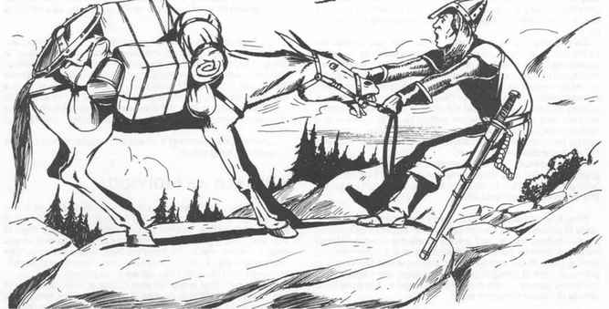

动物个体 · Animals as Individuals

如果地下城主和玩家愿意，陪伴角色队伍穿越荒野的动物可以成为冒险中的“配角”。只要给它们食物、不让它们过度工作，也不把它们带到无法通过的地方，它们通常会从冒险开始到结束一直可靠而不抱怨，人们大体上也会把它们视为理所当然。
但再进一步，把每只坐骑和驮兽当作一种独特的非玩家角色来对待，既不困难，又可能非常有趣。这样看待动物时，每一只都有鲜明性格，并会在相同情形下与其他动物作出不同反应。角色越早了解自己动物的怪癖和特征，角色和动物就越能从中受益。
只要卖主信誉良好、与买家交易诚实，角色有时可以从坐骑或驮兽的前任主人那里获得关于动物的有用信息。地下城主可以利用这些信息修改动物的一般特征，把该生物的个体差异考虑进去。例如，如果一匹马以“脚步非常稳，但讨厌脚湿”闻名，那么它较不容易跛行，在崎岖或极崎岖地形中可能比普通马稍快；但它不会自愿进入沼泽或涉过河流，若被迫在这些条件下移动，它会以低于正常的速度前进，或可能拒绝前进甚至恐慌。
如果动物是在野外捕获的，角色只能通过反复试验了解它的性格（除非使用诸如动物交谈术之类的魔法手段）。如果不确定动物会在某种情况下如何反应，最好在受控条件下让它经历这种情况。例如，要了解动物对弄湿脚的感受，可以在清晨拆营前、动物平静且休息充足时把它带进溪流；不要等到被一群熊地精追赶、必须涉过浅河逃跑时才进行测试。